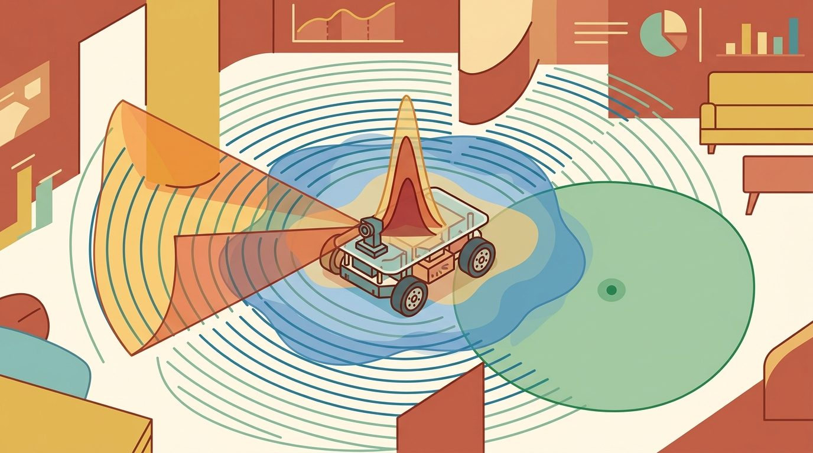
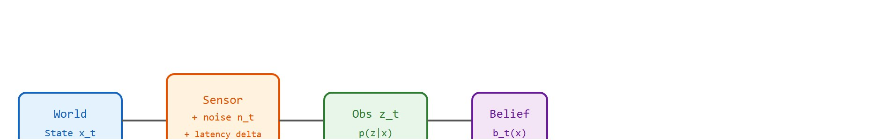
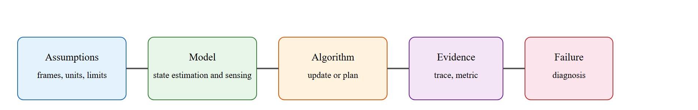

"The agent does not see the world. It sees what the sensors chose to forward, after the noise had its turn."
Section 8.8

This section builds on the belief-state framing introduced in section 2.7, where perception is treated as a belief-producing system that feeds downstream action under uncertainty. The imperfect-window model developed here recurs in section 29.2, which shows how drift accumulates in visual odometry and how SLAM corrects it by fusing absolute references with the noisy incremental estimates covered below. Readers working on sensor fusion pipelines may also find section 8.5 (state estimation filters) a useful companion before proceeding.
A warehouse robot stops cold in front of a pallet it has handled a thousand times before. Its depth sensor returns a ghost reading; its pose estimate drifts by two centimeters; the gripping trajectory fails. The robot did not break. Its perception broke. Every deployed embodied system faces this: sensors lie, latency accumulates, and the world does not hold still. Right now, as robots leave controlled labs and enter unstructured spaces, the gap between what a sensor reports and what is actually there has become the dominant failure mode. Here you will learn to model that gap formally, propagate uncertainty through the agent loop, and build the diagnostic habits that keep a real system running when the world stops cooperating.
Every number a robot reads about the world arrives late, distorted, and stripped of something the world actually contained. The agent that believes its sensors is already acting on a fiction. Figure 8.8A captures the core idea: the agent peers at reality through a clouded, partial window rather than seeing it directly. This section defines the object of study, connects it to the agent loop, and tests it with a compact implementation.

This section uses the belief notation $b_t(x)$ informally from here forward; its formal definition, $b_t(x)=p(x_t=x\mid z_{1:t},u_{1:t-1})$, is given later in the Technical Core, where the worked door-occlusion example shows exactly how an observation updates it.
The key question in Perception as an imperfect window into the world is practical: what must the agent know, what can it observe, what action is available, and what evidence shows that the action worked under the stated conditions?
A representation earns its place when it changes the measurable action interface. In Perception as an imperfect window into the world, the reader should keep asking which decision becomes easier, safer, or more reliable.
For Perception as an imperfect window into the world, the practical design rule is to make the interface inspectable before optimization begins: inputs, outputs, units, latency, bounds, and failure labels should all be visible in the saved artifact.
The mechanism in Perception as an imperfect window into the world is the contract between representation and action. Name what enters the module, what leaves it, which assumptions make that transformation valid, and which log would reveal a bad handoff.
A common assumption is that perception imperfection is a temporary engineering limitation: that better sensors, more training data, or higher-resolution models will eventually produce ground-truth observations. This assumption is wrong in embodied AI because physical sensing is irreducibly lossy: a 2-D image projection destroys depth information, occlusions hide objects that continue to move, latency means the robot always acts on a past world state, and any finite sensor has a calibration regime it will eventually leave. The correct mental model is that perception produces a belief, not a measurement: the agent's task is to act rationally under that belief and to design recovery behavior for when the belief degrades, not to wait for a sensor that makes uncertainty disappear.
A sensor that reports a number is not reporting the world; it is reporting one lossy, delayed, calibration-bound sample of the world, and the gap between those two things is exactly where embodied systems fail.
To see that lossy, delayed gap turn into a concrete robot failure, watch it accumulate in one of the most common perception pipelines. Visual odometry estimates how a camera moved by comparing consecutive frames. It shows perception as an imperfect window sharply: the system sees only pixels, recovers motion only up to an unknown scale, and accumulates drift with every frame because each estimate builds on the last.
Scale ambiguity has direct consequences. A robot following a unit-scale trajectory collides or stops short by a factor equal to the true motion distance. On a 10-meter approach, a 0.8x scale error stops the arm 2 meters early and fails the grasp on any real platform. The geometry explains this. A camera projects 3-D rays onto a 2-D plane, so a scene twice as far away with features twice as large looks identical to the original. The essential matrix $E$, a 3x3 matrix relating corresponding points between two calibrated camera views, encodes only the direction of translation. Scaling both scene depth and translation by the same constant leaves every pixel correspondence unchanged, so the pipeline cannot recover magnitude. In a 50-meter corridor, a monocular VO pipeline with no absolute reference drifts 1 to 3 meters by the far end. Fusing that same pipeline with a single GPS fix at the midpoint holds drift below 0.1 meters. One extra observation, added at one moment, cuts accumulated error by a factor of 10 to 30. That reduction is what the imperfect-window framing makes concrete: the window alone is insufficient, but knowing where it fails is enough to fix it.
So far: monocular cameras cannot recover absolute scale because scaling depth and translation together leaves every pixel unchanged, so drift accumulates unless a single absolute reference (like one GPS fix) is fused in; the next block walks through the actual four-stage pipeline (feature detection, matching, essential-matrix estimation, pose decomposition) that produces this scale-free estimate.
The classic monocular pipeline runs four stages: detect repeatable features in each frame (ORB, Oriented FAST and Rotated BRIEF, is a fast binary feature detector and descriptor); match descriptors between frames using RANSAC (Random Sample Consensus), an iterative method that fits a model while discarding outlier correspondences; estimate $E$ from matched pixel correspondences and camera intrinsics $K$ (the matrix of focal length and optical center parameters that maps 3-D camera coordinates to 2-D pixel coordinates); decompose $E$ to recover relative rotation $R$ and unit translation $t$ (translation known only up to an unknown scale factor). The pipeline below sketches the OpenCV call sequence; cv2.findEssentialMat and cv2.recoverPose recover the motion.
# Monocular visual odometry pipeline sketch (the cv2 calls are shown inline).
import numpy as np
# import cv2
def vo_step(img1, img2, K):
# 1. Detect ORB features in both frames.
# orb = cv2.ORB_create(2000)
# kp1, des1 = orb.detectAndCompute(img1, None)
# kp2, des2 = orb.detectAndCompute(img2, None)
# 2. Match binary descriptors with Hamming distance.
# matcher = cv2.BFMatcher(cv2.NORM_HAMMING, crossCheck=True)
# matches = matcher.match(des1, des2)
# pts1 = np.float32([kp1[m.queryIdx].pt for m in matches])
# pts2 = np.float32([kp2[m.trainIdx].pt for m in matches])
# 3. Estimate the essential matrix with RANSAC to reject outlier matches.
# E, mask = cv2.findEssentialMat(pts1, pts2, K, cv2.RANSAC, 0.999, 1.0)
# 4. Recover relative rotation R and unit translation t.
# _, R, t, mask = cv2.recoverPose(E, pts1, pts2, K)
# return R, t
# Standalone demo: a pure horizontal pixel shift implies sideways motion.
pts1 = np.array([[100, 120], [200, 150], [300, 90],
[250, 300], [140, 280]], float)
pts2 = pts1 + np.array([4.0, 0.0])
return (pts2 - pts1).mean(axis=0)
K = np.array([[700., 0., 320.], [0., 700., 240.], [0., 0., 1.]])
print("mean pixel flow (dx, dy):", vo_step(None, None, K))When calling cv2.findEssentialMat, the RANSAC reprojection threshold (the fourth argument, defaulting to 1.0 pixel) controls how aggressively outlier matches are rejected. On low-resolution cameras or scenes with large textureless regions, raising this to 2.0 or 3.0 pixels recovers more inliers and stabilizes the essential matrix estimate. On high-resolution cameras or scenes with fine structure, keeping it at 0.5 to 1.0 pixel suppresses false matches that would otherwise corrupt the recovered rotation. Check the inlier ratio reported by the returned mask: if fewer than 50 percent of matches survive, the threshold or the feature count needs adjustment before the pose decomposition is trustworthy.
The fragment should make missingness and uncertainty explicit. The production stack should log raw sensor evidence, estimated state, confidence, latency, and the action that consumed the estimate.
Knowing that the window is lossy is only half the job; the following recipe turns that awareness into the concrete steps for building a perception stack that stays honest about what it cannot see.
The common mistake in Perception as an imperfect window into the world is to celebrate the component score before checking the closed-loop handoff. The failure usually appears at the boundary: stale state, wrong frame, delayed action, saturated actuator, or metric that ignores the real task cost.
A robotics team using Perception as an imperfect window into the world should log not only final success, but intermediate observations, chosen actions, controller status, and recovery events. The logs reveal whether the method is solving the task or merely passing the easiest episodes.
A good embodied system makes perception as an imperfect window into the world visible twice: once in the design sketch and once in the replay artifact. The second view keeps the first one honest.
1. Foundation models as universal sensor decoders. Rather than fitting a separate perception model per sensor modality, 2024 work trains a single large transformer on heterogeneous sensor streams (cameras, lidar, radar, IMU) and fine-tunes it to any downstream robot task. Google DeepMind's RT-2 successor line and the Octo generalist robot policy (team at UC Berkeley, 2024) show that a shared backbone can generalize across embodiments and sensor configurations with far less per-robot calibration. The open problem is that these models still fail silently when a sensor departs from its training distribution: confidence scores do not drop at the edge of calibration, so the agent has no signal to trigger a fallback.
2. Uncertainty-aware neural state estimation. Classical filters (EKF, the extended Kalman filter; UKF, the unscented Kalman filter, which uses a small set of sample points to approximate nonlinear transformations more accurately than the EKF's linearization) propagate Gaussian covariance but rely on hand-tuned process and measurement noise models. A wave of 2024-2025 papers replaces the noise model with a learned network that outputs both the state estimate and a calibrated covariance, conditioned on raw sensor history. The DiffusionFilter line (MIT CSAIL, 2024) and analogous work at ETH Zurich on learned IMU integration show sub-centimeter drift on indoor trajectories while providing calibrated uncertainty that widens correctly under occlusion, without any manual noise tuning. The gap is that the learned covariance is not yet interpretable enough for safety-critical certification.
3. Event cameras for high-speed, low-latency perception. Standard frame cameras impose a fixed latency floor (30-120 Hz) that exceeds the dynamics of fast manipulation and agile flight. Event cameras (pioneered by Prophesee and ETH Zurich's RPG group) emit asynchronous per-pixel brightness changes at microsecond resolution, cutting effective perception latency by two orders of magnitude. The 2024 RPG paper "Secrets of Event-Based Optical Flow" demonstrated optical flow accurate enough to stabilize a quadrotor in complete darkness. The core open problem is that event-based neural networks require entirely new training pipelines, and no general-purpose simulation environment yet generates physically accurate event streams for large-scale pretraining.
Open problem for PhD students. All three directions share a common gap: none of them provides a principled, deployable answer to the question "when should the agent stop trusting its own perception and ask for help or halt?" Calibrated uncertainty is a necessary condition but not sufficient: a model can be well-calibrated on average yet badly wrong for the specific scene geometry the robot is currently facing. A tractable dissertation direction is to build a scene-conditioned anomaly detector that flags when the current sensor context falls outside the convex hull of the training distribution (the smallest region enclosing every training example; a new reading outside it is a genuine extrapolation, not just a rare interpolated case), and to close the loop by triggering a safe hold or an active information-gathering motion, then evaluate whether the intervention prevents downstream task failures without causing excessive caution.
Can you name the observation, state estimate, action, success metric, and most likely failure mode for Perception as an imperfect window into the world? If not, the system boundary is still too vague.
Perception as an imperfect window into the world sits inside the Part II robotics contract: geometry defines where things are, kinematics defines what motion is possible, dynamics defines what motion costs, control defines how errors are corrected, and sensing defines what the agent can know on time.
Perception is a belief-producing system, so downstream action must handle ambiguity, delay, and missing state. The principle carries an intuitive role, a formal interface, a runnable check, and a reproducible failure mode, which is why it serves practitioners and researchers alike.
For Perception as an imperfect window into the world, state estimation converts imperfect observations into a belief usable by control. Preserve calibration, covariance, timestamp, frame, dropout behavior, and latency.
| Tool or Library | What It Handles | Verification Check |
|---|---|---|
| OpenCV | handles camera models, calibration, projection, and vision preprocessing | Verify intrinsics, distortion, image timestamp, and frame-to-camera transform. |
| ROS 2 robot_localization | fuses odometry, IMU, GPS, pose, and twist streams through ROS estimation nodes | Verify covariance, frame IDs, timestamps, and rejected measurement counts. |
| FilterPy | teaches and prototypes Kalman, extended Kalman, unscented, and particle filters | Verify process noise, measurement noise, innovation, and covariance growth. |
| Kalibr (ETH Zurich ASL) | calibrates camera-IMU extrinsics and per-sensor time offsets from a recorded calibration-target sequence | Verify the recovered camera-to-IMU rotation against the CAD mounting frame and confirm the estimated time offset is stable to within one IMU sample across runs. |
| Open3D | registers and filters depth point clouds (ICP alignment, voxel downsampling, outlier removal) from sensors like the RealSense D435 | Verify ICP fitness and inlier RMSE on a known rigid transform, and confirm depth dropout beyond the sensor range shows up as missing points rather than silently zero-filled returns. |
Use this recipe when turning Perception as an imperfect window into the world into code, a simulator experiment, or a robot diagnostic. The point is not to use every library. The point is to keep the hand-built baseline and the maintained-tool path comparable.
For Perception as an imperfect window into the world, compare methods only through one saved artifact that preserves the inputs, outputs, units, timestamps, latency budget, configuration, seed, metric definition, and failure labels relevant to this section. The comparison is meaningful only when the same script evaluates the same panel.
Extend the section exercise by adding one perturbation specific to Perception as an imperfect window into the world and one latency or uncertainty check. Save the result in the EvidenceRecord schema, then explain which library output you trust and why.
The planner should treat perception as delayed, uncertain, and partial; this design obligation is called acting on a belief, not the world, and it is the central contract between perception and control. Before changing behavior, ask whether the state estimate includes confidence, timestamp, frame, and a recovery path when the window goes dark.
Perception as an imperfect window into the world is the chapter's closing principle: the robot never acts on the world directly, it acts on a belief produced by partial, delayed, biased observations. The practical lesson is not pessimism. It is to design actions, monitors, and recovery behavior that respect what the perception system cannot know. Figure 8.8.T summarizes the chain this section must preserve when moving from a teaching example to a real embodied system.

A useful belief-state view is $b_t(x)=p(x_t=x\mid z_{1:t},u_{1:t-1})$, where $z_{1:t}$ is the full sequence of observations received up to time $t$ and $u_{1:t-1}$ is the sequence of control actions taken so far. The controller acts on $b_t$, not on the hidden state $x_t$ itself. When observations are partial, delayed, or ambiguous, two different world states can produce the same observation, so the right action may be to gather information rather than to commit immediately.
Think of tasting soup through a straw: you sample a small volume from one spot, and you cannot tell whether the whole pot is well-seasoned or whether the salt pooled at the bottom. Two very different pots (perfectly balanced versus nearly inedible) can produce the same single sip. A skilled cook does not guess and serve; they stir, then taste again from a different depth, collecting evidence until the belief about the whole pot is confident enough to act on. The robot's belief state works the same way: a single sensor reading leaves genuine ambiguity between world states, and the correct move is sometimes to gather one more observation rather than commit to an action that could be wrong.
Consider a specific case with numbers: a robot estimates whether a door ahead is open or closed. At time $t$ the prior belief is $b_t(\text{open}) = 0.5$. The camera returns a partial occlusion; the likelihood of that observation given "open" is 0.7, and given "closed" is 0.4. Applying Bayes: the unnormalized posterior is $0.7 \times 0.5 = 0.35$ for open and $0.4 \times 0.5 = 0.20$ for closed, giving $b_{t+1}(\text{open}) = 0.35 / 0.55 \approx 0.64$. The controller threshold for committing to a pass-through action is 0.80, so the robot does not yet commit; instead it requests a second view from a different angle. This is the "when" answer for partial observability: the agent defers action whenever $\max_x b_t(x)$ stays below the safety threshold, and the threshold is set by the cost of a wrong commitment, not by convention.
Trace the door-open estimate across two noisy observations, starting from total ignorance. Prior: $b_0(\text{open}) = 0.5$, $b_0(\text{closed}) = 0.5$.
Observation 1 (a glimpse that mildly favors open), likelihoods $p(z_1\mid\text{open}) = 0.7$, $p(z_1\mid\text{closed}) = 0.4$. Unnormalized: open $= 0.7 \times 0.5 = 0.35$, closed $= 0.4 \times 0.5 = 0.20$. Normalizer $= 0.35 + 0.20 = 0.55$. Posterior: $b_1(\text{open}) = 0.35 / 0.55 = 0.636$, $b_1(\text{closed}) = 0.364$. Max belief is 0.636, below the 0.80 commit threshold, so the agent gathers another view.
Observation 2 (a clearer second angle), likelihoods $p(z_2\mid\text{open}) = 0.8$, $p(z_2\mid\text{closed}) = 0.3$. Now the prior is the previous posterior. Unnormalized: open $= 0.8 \times 0.636 = 0.509$, closed $= 0.3 \times 0.364 = 0.109$. Normalizer $= 0.618$. Posterior: $b_2(\text{open}) = 0.509 / 0.618 = 0.823$, $b_2(\text{closed}) = 0.177$. Max belief 0.823 now clears the 0.80 threshold, so the agent commits to the pass-through action.
Two observations, each individually too weak to act on, compound into a confident belief: 0.50 to 0.636 to 0.823. The information-gathering action paid for itself by turning an ambiguous window into an actionable one.
To close the loop from theory to a runnable check, apply this diagnostic to the door-open example above: the observable is the occluded camera frame, the hidden state is the door's true position, the two indistinguishable states are "open" and "closed" under a weak glimpse, and the recovery trigger is the second-view request that pushed belief from 0.636 to 0.823. Building this same five-step loop around the visual-odometry pipeline (observable: pixel flow; hidden: true camera translation scale; indistinguishable states: any depth-translation pair scaled by the same constant; recovery trigger: fusing one GPS fix) is exactly the exercise asked for in Exercise 8.8.1, so the loop above is not a checklist to admire but the procedure this section expects the reader to run.
| Perception Limit | Robot Consequence | Diagnostic Or Mitigation |
|---|---|---|
| Partial observability | The same observation can match several world states. | Maintain multiple hypotheses or choose an information-gathering action. |
| Occlusion | The object may move while hidden. | Age the belief, grow uncertainty, and plan a verification view. |
| Semantic uncertainty | A label may be correct visually but wrong for action. | Test affordances, grasp outcomes, and contact feedback, not only class accuracy. |
| Latency | The robot acts on a past world state. | Measure end-to-end delay and compensate with prediction or slower action. |
| Dataset shift | Confidence stays high outside the training distribution. | Monitor residuals, abstentions, novelty scores, and closed-loop recovery events. |
Consider a specific case: a depth camera trained and calibrated indoors reports 0.94 confidence on an obstacle detection at 1.2 m, but the robot has moved into a sunlit outdoor corridor. Direct sunlight saturates the IR projector, inflating depth readings by 0.3 to 0.8 m while the softmax score (the normalized output of the detector's final layer, treated as a confidence value between 0 and 1) stays above 0.90, because the feature distribution looks locally similar to a well-lit indoor scene. The robot slows for an obstacle that is actually 1.7 m away, but the real hazard is that a genuine 0.5 m obstacle nearby would receive the same high-confidence label with a wrong distance. The diagnostic is not to look at classification accuracy alone but to plot innovation residuals across lighting conditions, which spike the moment the sensor leaves its calibration regime.
Expected output is a replay where perception confidence changes the action. The agent should slow down, gather another observation, or switch to guarded motion when uncertainty matters for safety or task success.
A perception stack fails when it exports a single confident pose or label while the underlying evidence is occluded, stale, ambiguous, or outside the calibration regime.
Core references for Perception as an imperfect window into the world: Modern Robotics; Murray, Li, and Sastry; Siciliano et al.; LaValle; and official documentation for Drake, MuJoCo, Pinocchio, CasADi, python-control, GTSAM, ROS 2, and OpenCV as applicable.
Use these references to check notation, frame conventions, units, solver assumptions, and maintained-library behavior.
NASA's Perseverance rover treats every camera frame as an imperfect window: its AutoNav system, the onboard autonomous navigation software that plans a safe path without waiting for ground control, builds a stereo depth map, and in practice, published mission descriptions indicate it treats low-confidence regions (shadowed terrain, low-texture sand) as unknown rather than drivable, routing around them rather than risking a crossing. Because a command round-trip to Earth takes 5 to 20 minutes, the rover cannot ask a human to resolve ambiguity in real time, so this design typically bakes the belief-versus-measurement distinction directly into its hazard map, favoring a halt or a slower, verified path whenever uncertainty exceeds a conservative safety bound.
Goal: see firsthand how a state estimate's uncertainty (covariance) grows during sensor blackout and snaps back when measurements return, making the belief-not-measurement idea concrete.
Tools: Python with numpy, matplotlib, and filterpy (pip install filterpy). 15 to 30 minutes.
Setup: Simulate a 1-D object moving at constant velocity. Generate true positions, then noisy position measurements (add Gaussian noise, sigma = 0.5 m). Build a constant-velocity Kalman filter with filterpy.kalman.KalmanFilter. Run predict-update each step, recording the estimated position and the position variance kf.P[0,0].
What to vary: introduce a dropout window (for steps 30 to 50, call only kf.predict() and skip kf.update(), simulating a blind sensor). Then vary the dropout length (10, 20, 40 steps) and the measurement noise sigma (0.1, 0.5, 2.0 m).
What to observe: plot the position variance over time on one axis and the estimate-versus-truth error on another. You should see variance climb steadily during the blackout (the belief admits it knows less), the error drift away from truth, then both collapse the instant measurements resume. Note how a longer blackout or noisier sensor leaves a wider belief that takes more updates to re-tighten. That widening covariance is exactly the signal a controller should use to slow down or seek another view.
Perception as an imperfect window into the world is useful when it makes the perception-action loop more reliable, not when it merely adds a more impressive model name.
Beginner (weekend): Sensor dropout visualizer in PyBullet. Build a simulated mobile robot in PyBullet that streams a noisy range sensor and renders the belief-state uncertainty as a live heat map alongside the ground-truth map. The key challenge is writing a minimal Bayesian occupancy update that degrades gracefully when 20 percent of readings are randomly dropped, so the map stays useful rather than corrupting silently.
Intermediate (1 to 2 weeks): Monocular visual odometry with drift audit in ROS 2. Implement the ORB detect, match, essential-matrix, recover-pose pipeline described in this section as a ROS 2 node, fuse it with IMU data via the robot_localization EKF node, and log innovation residuals and covariance growth across three lighting conditions (indoor, outdoor sun, outdoor shade). The key challenge is identifying the exact frame in which drift accumulates fastest and demonstrating that a single absolute GPS fix at the midpoint reduces total drift by at least a factor of five on a 50-meter corridor run.
Design a method-matched experiment for Perception as an imperfect window into the world. Specify the environment, observations, actions, metric, one perturbation, and the library output you would compare against the hand-built baseline.
Continue to Chapter 9: Why Simulation Is Central, where this contract becomes the input to the next embodied capability.